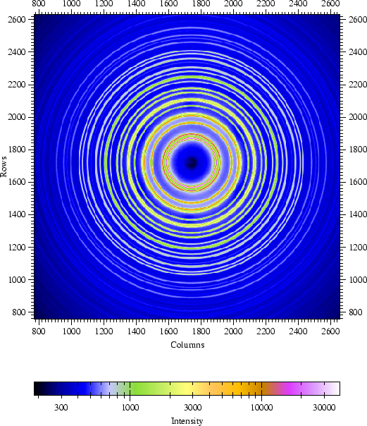
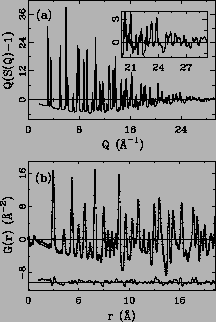

All diffraction experiments for our first study were performed at the
1-ID beam line at the Advanced Photon Source (APS) located at Argonne
National Laboratory, Argonne, IL (USA). High energy X-rays were
delivered to the experimental hutch using a double bent Laue
monochromator capable of providing a flux of 1012
photons/second and operating with X-rays in the energy range of
80-100 keV [62]. Two energies of X-rays were used for
the experiments, 80.725 keV (0.15359 Å) and 97.572 keV (0.12707 Å
), with the 80.725 keV experiments being performed first. In the
optics hutch, a gold foil was installed after the monochromator
between two ion chambers, attenuating the flux of the beam by
approximately 30%. Calibration of energy at 80.725 keV was achieved
using the gold absorption edge as the reference.
Figure 2.3:
(color) Two
dimensional contour plot from the Mar345 Image Plate Detector. The
data are from nickel powder measured at room temperature with
97.572 keV incident X-rays. The concentric circles are where
Debye-Scherrer cones intersect the area
detector.
|

|
A Mar345 image plate camera, a round disk with a usable diameter of
345 mm, was mounted orthogonal to the beam path, with the beam
centered on the IP. When operating with 80.725 keV X-rays, a LaB6
standard was used to calibrate the sample to detector distance and the
tilt of the IP relative to the beam path, using the software Fit2D
[63,64]. For calibration of the IP, the
wavelength was fixed to represent the gold absorption edge,
0.15359 Å, at 80.725 keV. When the X-ray energy was increased from
80.725 to 97.572 keV, the sample to detector distance was first fixed
at the value determined at the Au edge and the wavelength was
calibrated using the standard LaB6. The IP camera was then moved
closer to the sample and the new sample to detector distance was
obtained from refinement by fixing the wavelength at 0.12707 Å.
Sample to detector distances of 317.28 and 242.12 mm were used for
collection of data with measured Qmax of 21.0 Å-1 and 30.0 Å-1,
respectively. In practice, Qmax of 18.5 Å-1 and 28.5 Å-1 were
used due to the corrupted data near the IP edges. The beam stop is a
solid tantalum cylinder (diameter 3.1 mm), with an indentation
machined to a depth of approximately 2 mm to accept the beam. With a
beam stop to sample distance of approximately 150 mm, the scattering
angle blocked by the beam stop is less than 1 degree, dependent upon
sample to detector distance. This gives a Qmin limited to
approximately 1 Å-1 . With our beam stop to sample distance of
approximately 150 mm, the scattering angle blocked by the beam stop is
less than 1 degree. This gives the energy dependent Qmin limited
to approximately 0.6 Å-1 with 80.725 keV X-rays. In many
crystalline materials with small unit cells this is not a problem.
When Bragg-peaks are lost at low-Q due to this limit, a weak,
long-wavelength oscillation results in G(r), which is not fatal but,
ideally, is to be avoided.
The methods used to synthesize  -AlF3, Bi4V2O11 and Bi4V1.7Ti0.3O10.85 have been
reported elsewhere [65,66]. Ni was purchased from
Alfa Aesar (99.9%, 300 mesh) and was used as received. Fine powders
of all the samples were measured in flat plate transmission geometry,
with thickness of 1.3 mm packed between kapton foils. The beam size
on the sample as defined by the final slits before the goniometer was
0.4 mm × 0.4 mm. Lead shielding before the goniometer, with a
small opening for the incident beam, was used to reduce
background. All raw data were integrated using the software Fit2D and
converted to intensity versus 2
-AlF3, Bi4V2O11 and Bi4V1.7Ti0.3O10.85 have been
reported elsewhere [65,66]. Ni was purchased from
Alfa Aesar (99.9%, 300 mesh) and was used as received. Fine powders
of all the samples were measured in flat plate transmission geometry,
with thickness of 1.3 mm packed between kapton foils. The beam size
on the sample as defined by the final slits before the goniometer was
0.4 mm × 0.4 mm. Lead shielding before the goniometer, with a
small opening for the incident beam, was used to reduce
background. All raw data were integrated using the software Fit2D and
converted to intensity versus 2 (the angle between incident
and scattered X-rays). An example of the data from nickel measured at
97.572 keV is shown in Fig. 2.3. The integrated data
were then transferred to a home-written program,
PDFgetX2 [41], to obtain the PDF.
(the angle between incident
and scattered X-rays). An example of the data from nickel measured at
97.572 keV is shown in Fig. 2.3. The integrated data
were then transferred to a home-written program,
PDFgetX2 [41], to obtain the PDF.
Distortions in intensities when using flat IPs have been addressed in
single crystal crystallography, and arise from the fact that IPs are
of a finite thickness, often between 100-200 microns
[60,67].
At the high energies ( 60 keV) needed to measure S(Q) to a
high value of Q with commercial IP cameras, absorption of the
X-ray photons by the phosphor is very small and most of the X-rays
travel straight through the phosphor. The absorption, and thus the
measured intensity, is then dependent on the path length of the beam
through the IP phosphor at all incident angles and can easily be
corrected [60]. This oblique incidence correction
assumes that the correction is equal in all directions, thus, care was
taken to ensure the IP was mounted orthogonal to the beam. The
attenuation of scattered photons after the sample, due to air
absorption, is angle dependent. This effect is negligible due to the
very small absorption of the high energy X-rays between the sample and
the detector and is ignored. The count time is always adjusted to
ensure that there are no saturated pixels in the detector. Standard
corrections for multiple scattering, polarization, absorption, Compton
scattering, and Laue diffuse scattering were also applied to the
integrated data to obtain the reduced structure function F(Q) (Fig. 2.4(a)). Direct Fourier transformation gives
the pair distribution function G(r) (Fig. 2.4(b)).
The average structure models were refined using the profile fitting
least-squares regression program, PDFFIT
[11]. Rietveld refinements of the data were performed
with GSAS [68].
60 keV) needed to measure S(Q) to a
high value of Q with commercial IP cameras, absorption of the
X-ray photons by the phosphor is very small and most of the X-rays
travel straight through the phosphor. The absorption, and thus the
measured intensity, is then dependent on the path length of the beam
through the IP phosphor at all incident angles and can easily be
corrected [60]. This oblique incidence correction
assumes that the correction is equal in all directions, thus, care was
taken to ensure the IP was mounted orthogonal to the beam. The
attenuation of scattered photons after the sample, due to air
absorption, is angle dependent. This effect is negligible due to the
very small absorption of the high energy X-rays between the sample and
the detector and is ignored. The count time is always adjusted to
ensure that there are no saturated pixels in the detector. Standard
corrections for multiple scattering, polarization, absorption, Compton
scattering, and Laue diffuse scattering were also applied to the
integrated data to obtain the reduced structure function F(Q) (Fig. 2.4(a)). Direct Fourier transformation gives
the pair distribution function G(r) (Fig. 2.4(b)).
The average structure models were refined using the profile fitting
least-squares regression program, PDFFIT
[11]. Rietveld refinements of the data were performed
with GSAS [68].
Figure 2.4:
(a) The experimental reduced structure function
F(Q) = Q*(S(Q) - 1) of Ni powder. The inset is a zoom in of high Q
region showing the excellent signal to noise. (b) The experimental
G(r) (solid dots) and the calculated PDF from refined structural
model (solid line). The difference curve is shown offset below.
|

|
Xiangyun Qiu
2005-02-18